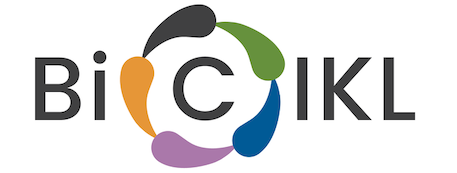
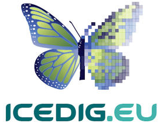

Ongoing and past projects
Current Projects
-
Arcadia 2022-2025
The grant will help build on the momentum created in the first Arcadia supported project (years 2018-2021) by: (1) leading the data extraction effort and building a critical mass of FAIR scientific data and related tools involving the community; and (2) establishing a long lasting, self-sustaining research infrastructure.
-
BiCIKL (EU)
Biodiversity Community Integrated Knowledge Library (BiCIKL) is building the Biodiversity Knowledge Hub (BKH). more
-
NIH-R21 Viral Spillover (NIH)
The goal of this proposed project is to harness the collective power of bioinformatics, artificial intelligence (AI), and ecology to transform our understanding of taxon-specific zoonotic risk. more
-
eBioDiv (Swissuniversities)
e-BiodDiv will provide a service for Swiss biodiversity scientists to access and disseminate their research data about species in legacy and prospective publications, and provide access to data about their collections, scientists and specimens. more
-
MétoTaxa (Fondation Nationale de Science Ouverte, France)
Le projet déposé ici vise à mettre en relation les différents partenaires pour adapter la chaîne de production Métopes (partenaire 1) aux besoins spécifiques de la discipline taxonomique.
Past Projects
-
ICEDIG 2018-2020
ICEDIG provided a blueprint to build DiSSCo more
-
Arcadia 2018-2021
Arcadia supported a three-year project to liberate 300,000 taxonomic treatments, build together with Zenodo and Pensoft the Biodiversity Literature Repository (BLR) at Zenodo/CERN, and develop within TreatmentBank tools and services to liberate data and make them accessible.
-
EU BON

EU BON seeks ways to better integrate biodiversity information and implement into policy and decision-making of biodiversity monitoring and management in the EU.
-
LinkD
LinkD (pronounced 'linked') will unite European biodiversity scientists behind a common set of infrastructures and goals leveraging existing investment in biodiversity science infrastructures in support of the long-term community inspired vision of modelling the biosphere.
-
pro-iBiosphere

The aim of pro-iBiosphere is to prepare, through a coordination action, the ground for an integrative system for intelligent management of biodiversity knowledge.
-
Wiki4R
Wiki4R will create an innovative virtual research environment (VRE) for Open Science at scale, engaging both professional researchers and citizen data scientists in new and potentially transformative forms of collaboration.